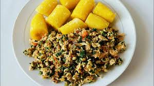
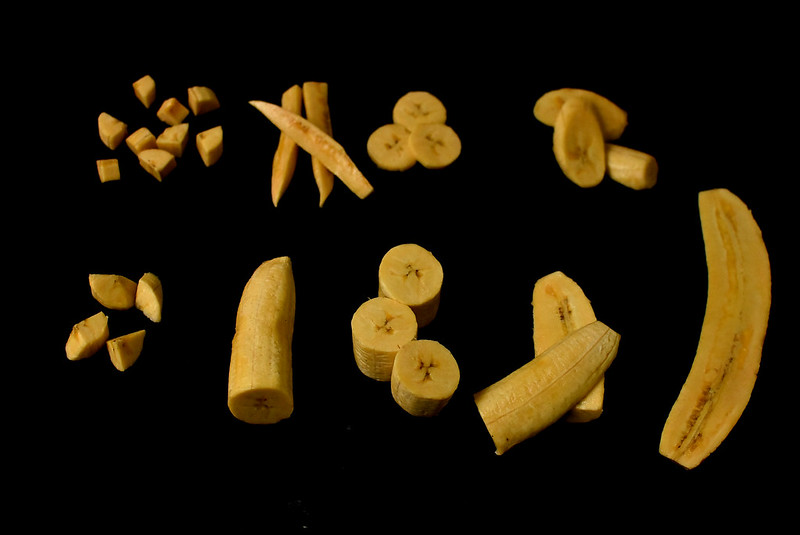

A delicious meal for the SOUL! This fruit will bring JOY during ANY MEAL period!!!
High Protein | Breakfast | African Inspired
Plantain is a wonderful creation that has graced the Earth for centuries. It is a loved fruit in many nations, that are diverse in both biomes, and languages... It really is THAT GIRL! It can be made into so many things! Include it in a meal, drink, dessert, frozen snack or dry! Plaintain does it all! It's just a something so wholesome about a fruit that is so versatile, it's insane. So, today I had to pair it in a classic way that may remind you of being a family gathering. This fruit is underrated as is wholesome!
So onto the recipe! I know you're wondering if we are going to use ripe plantain or unripe? Well, I am familar and more comfortable with ripe plantain so that is what we will be using. Alternatively, you can use the unripe plaintain however, if you want sweetness use the yellow one! The unripe plantain has its own charm that I am interested in exploring. Yet, ripe plantain warms my souls in a profound way that is memorable and timeless!
In terms of how you want to cut the plaintain- it's really up to your personal preference. If you are cooking for infants and small children opt for the smaller cut pieces. If you want it in round shapes cut it straight. If you prefer it to be angled why not. Plaintain will taste amazing not matter what. Just don't burn it... too much!lol. Also, free feel to cook, bake, air fry, boil, deep-fry the plantain however you like. Its such a moldable fruit. Like you can even flatten it, then cook/bake/boil it.

For today's recipe it will be a timeless meal in the context that it can be eaten at any time of day. Why resict yourself to current food to particular moments in the day. If you breakdown the meaning of breakfast it mean to 'break' your interment 'fast' that you completed while you sleep. IF you didn't think you were a multi-tasker - rethink it! The human brain is capable as long as you train it to your preference! Now, this meal is intented to be nurtious and super delicious. I like to aim for wholesome nutrious meal when i want. I have curated this recipe to include iron, protein, carbs, fat, magnesium and vitamin D.
Now onto the recipe as I personally get annoyed by long speeches on recipes sites. For this recipe you can customize it however, you like. If you prefer fried or bake plaintain; MAKE your own. Please note that for this recipe we will be boiling the fruit, as it helpful so you can do a chore, or self-care while it turns into consumable nutriention.
Prep: 15 minutes Cook time: 20 minutes Total time: 35 minutes
- 1/4 white onion finely chopped
- 1/2 Roma Tomato
- 1 tbsp of Coconut oil or any cooking oil
- Salt to taste
- Pepper to taste
- 1 ripe plaintain chopped
- 1 cup of spinach finely
- 1 cup of kale finelly chopped
- 1 can of tuna (optional)
List of ingredients
Plaintain portion
- Cut the ends of the plaintain. Keep the skin on (alternatively you can keep the skin off but keep it mind it will boil quicker- its up to personal perference).
- Cut the plaintain to your preference. (However be mindful that if you cut it smaller it will cook, fry, boil, or bake faster).
- In a pot, fill it up half way with water. Put the stovetop on medium heat, & boil water.
- While the water is boiling, cut the plaintain to your preference. However be mindful that if you cut it smaller it will cook, fry, boil, or bake faster.
- Once it boils add in the plaintain.
- Boil for 20 minutes or till tender soft (pale yellow in color.
Scrambled portion
- In a bowl crack the 3 eggs add salt and pepper then mix
- On a cutting board or regular plate finely chop the onion, tomatoes, spinach, and kale.
- In a frying pan, heat the pan then add oil.
- Once the pan is hot enough, sautee the onion and tomatoes till tender and translucent in colour.
- Add the kale and spinach.
- Add the mixed eggs with tuna (optional) to the pan then cook and mix till cooked (or even omelette or poached- it's really personal perference).
Nutrients You Get From Plantains
-
Potassium Vitamin C (antioxidants) Carbs Magnesium Fiber
This meal is chef's kiss.... OMGGGGG. Loved it especially when I boiled the plaintain. I was able to multi-task and get some chores finished. Love a receipe that sort of does it- itself.